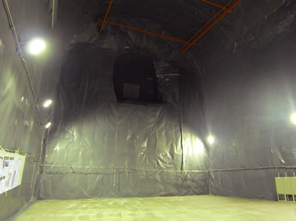

研究テーマ
ＸＭＡＳＳ実験
国際共同実験
素粒子物理学の最新の理論によれば，宇宙のあらゆる物質のもとになっている基本粒子はクォークとレプトンと呼ばれるスピン1/2のフェルミ粒子ですが，なかでも，レプトンの中のニュートリノと呼ばれる一群の中性粒子は際立って小さな質量を持ち，お互いの間で大きく混合していることが最近になって分かってきました。
XMASS実験は，このニュートリノについて，低エネルギーの太陽ニュートリノの観測，２重ベータ崩壊の観測，を目指すほか，宇宙物理学の最大の謎である暗黒物質について，その正体として考えられているWIMP ( Weakly Interacting Massive Particle ) の世界初の検出をも目指す国際共同実験です。<<XMASSグループのサイト>>
測定に用いるのは液体キセノン
XMASSの測定器に用いるのは前例のない大量（1～10 ton）の液体キセノンです。キセノンは真空紫外光（λ～175nm）を発する優れたシンチレータで，その発光量は，光量がもっとも多いとされるNaI(Tl)結晶並みに多いことが知られています。また，キセノンには寿命の長い放射性同位体が無く，蒸留による純化で超低放射能化が可能であることも特長です。さらに，安定な同位体の中には原理的に２重ベータ崩壊が可能な核種も存在するので，この核についてニュートリノの出ないタイプの２重ベータ崩壊が観測されれば，ニュートリノのマヨラナ的性質（粒子と反粒子の区別がないフェルミ粒子の性質）と絶対質量について世界初の情報が得られることも大いに期待できます。
2009年夏から暗黒物質探索開始予定
現在，XMASSグループでは，2009年夏からの暗黒物質探索開始を目指して，精力的に1 tonの液体キセノン検出器を建設中です。中村研でも，神岡における様々な開発研究でデータ取得に参加している他，検出器材料に必要不可欠な超低放射能材料を決めるためのICP-MSを用いた各種金属材料中のウランとトリウムの分析や，キセノンを用いた試験装置で生じやすい有機不純物のFT-IRによる分析も行っています。
ICP-MSによる超微量放射能分析
XMASSは，暗黒物質やニュートリノの超低頻度のイベントを測定するため，検出器自身の放射能や環境からの放射線を徹底的に抑えないといけません。環境からの放射線は検出器周囲の遮蔽を工夫することで低減できる余地がありますが，検出器自身から出る放射線を減らすには，当初から放射能の少ない材料を選ぶことに尽きます。そこで，中村研では東大グループの協力のもと，神岡鉱山の地下のクリーンルームに設置されたICP-MSを用いて，各種金属材料のウランとトリウムの分析を行いました。ICP-MSとは，アルゴンのプラズマで試料をプラズマ化しイオンを質量分析するpptレベルまで分析可能な超微量分析装置で，ウランやトリウムなど，寿命の長い放射性元素を定量する目的に適しています。我々は，銅，アルミ，マグネシウム，チタンなどの金属の高純度試料について，それらのウランとトリウムの分析を行い，検出器に適した材料の選定に貢献しました。
FT-IRによる残留物分析
キセノンは常温常圧では不活性な気体であることが良く知られていますが，液体になると油脂などを良く溶かす性質が顕著となります。実際，XMASSのこれまでの開発研究で，試験装置に用いられた何らかの物質が液体キセノンに溶け込み，シンチレーションの真空紫外光を吸収する不純物となって問題となることがありました。このような不純物は，液体キセノンを気化してキセノンを気体で回収すると残渣として残るので，この残渣をFT-IRを用いて評価しました。FT-IRは，フーリエ変換型の赤外分光法で，赤外域での吸収により分子の様々な振動や回転のエネルギー順位を決定して構造を推察することが可能です。実際に，我々は本学の専門家の協力のもと，これまで各種の残渣についてその分析を実施し，テープの粘着物質や半田のフラックスなど，その正体を明らかにして，後の開発研究に必要なデータを明らかにしてきました。
液体キセノンの特性の研究
また中村研では，2002年度から液体キセノンの特性の研究も進めています。例えば，液体キセノンの光学特性の１つである屈折率は，シンチレータに用いる上で設計から解析にいたるまで必要不可欠な定数ですが，いろいろな資料を調べているうちに，信頼できる正確な値が知られていないことがわかってきました。このことで，液体キセノンを用いた実験を進めている多くのグループは，どこもたいへんに困っていたのです。屈折率がわからなければ，じゃあ自分達で測ろう，そう考えて，我々は屈折率を精度良く測る実験を行うことにしました。このような研究を行えば，今後，長きにわたって多くの研究の役に立つでしょうし，テーマが明解でわかりやすく，しかも少人数で進められる小規模な研究は，大学院生のテーマとしてもたいへん教育的であるとも考えました。液体キセノンには，このように正確な情報がない特性が屈折率の他にもいくつも残っており，それらを明らかにすることは中村研の研究の大きな柱になっています。なお，このテーマの詳細については別のページに載せました。
|  |
| 【暗黒物質の探索実験用地下空洞】 XMASS実験の設備が入る地下空洞は、高さ15メートル、奥行き21メートル、幅15メートル。旧・神岡鉱山の地下1,000メートルにある。（撮影：5 Sep.2008） |